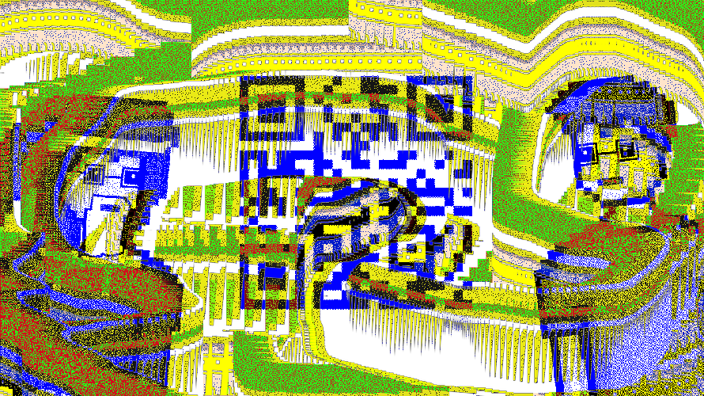

https://www.youtube.com/watch?v=kM_DMMb6hgs&feature=emb_imp_woyt
https://www.floriandalwigk.de/die-gem%C3%A4lde-von-r-udolf-und-s-klaus
convert R_Udolf.png S_Klaus.png -evaluate-sequence xor img_out.png
+
scan with Smartphone

Lösung: "1Qr_CoDe_KoMmT_SeLtEn_AlLeIn"